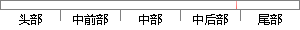

collection 这一个 jar 包的帮助。
片段位置图

相似结果|
1
原句片段：collection 这一个 jar 包的帮助。
相似片段 1：CollectionUtils的jar包冲突问题,小心工具类的使用 ...(final Collection coll)静态方法来判断一个给定的...希望能给大家以帮助,记得帮我点赞哦。目录:你以为...
|
※ 片段修改建议 ※
近似词参考：- 帮助：帮忙 扶助 辅助 接济 匡助 资助
系统自动生成语句：collection 这一个 jar 包的帮忙。
注：本片段修改建议为系统自动生成，仅供参考。